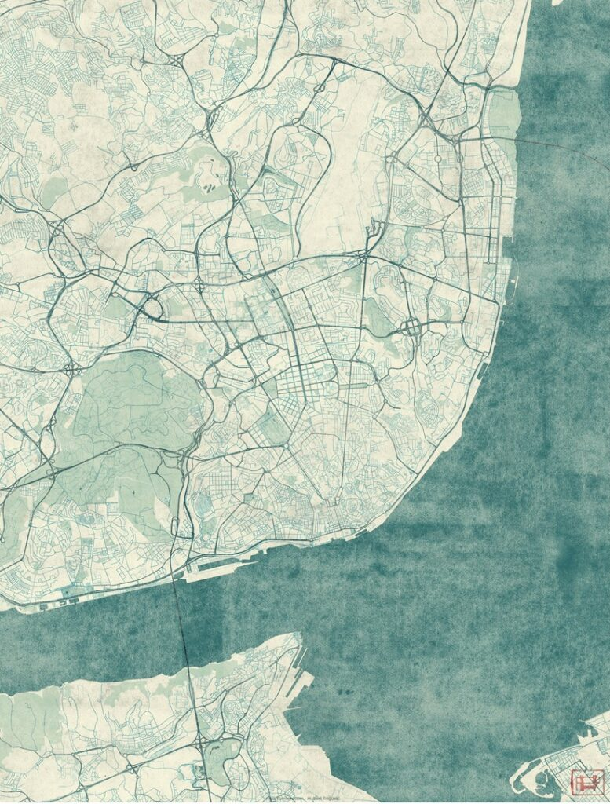

RESUMO SIMPLEX URBANÍSTICO:
O Decreto-Lei n.º 10/2024, de 8 de janeiro, insere-se no âmbito do Simplex Urbanístico, tendo como objetivo primordial a reforma e simplificação dos processos de licenciamento nas áreas do urbanismo, ordenamento do território e indústria.
Na prática, o Simplex Urbanístico reúne 26 medidas que visam simplificar, modernizar e inovar os serviços administrativos do Estado. Com as mudanças nas regras de licenciamento de obras e a reclassificação dos solos, espera-se uma redução dos custos associados a vários processos, o que pode facilitar o acesso à habitação — um dos maiores desafios que o país enfrenta atualmente.
Embora algumas medidas já estejam em vigor desde o início do ano, a maioria apenas foi implementada a 4 de março de 2024.
Dado o extenso conteúdo deste decreto-lei e o vasto conjunto de medidas que o compõem, neste artigo apresentamos as mais relevantes e com maior impacto.
MEDIDAS EM DESTAQUE
O que é o Simplex Urbanístico e quais são as suas principais alterações?
Com a publicação do Decreto-Lei nº 10/2024 em 8 de janeiro de 2024, o governo português trouxe uma série de mudanças cruciais para o setor de urbanismo e ordenamento do território. Denominado Simplex Urbanístico, esse pacote de reformas visa a desburocratização dos processos urbanísticos, buscando eficiência na tramitação de projetos e maior uniformidade nos procedimentos em todo o território nacional.
Neste artigo, vamos explorar os principais aspectos e mudanças introduzidas pelo decreto, incluindo o impacto sobre licenciamento, novos procedimentos, tecnologias integradas e muito mais.
1. O Enquadramento do Simplex Urbanístico
O Simplex Urbanístico faz parte do programa Mais Habitação, um pacote de medidas que visa solucionar os problemas de habitação e urbanismo em Portugal. O decreto impacta diversas legislações, como o Regime Jurídico da Urbanização e Edificação (RJUE), o Regulamento Geral das Edificações Urbanas (RGEU), o Regime Jurídico dos Instrumentos de Gestão Territorial (RJIGT), entre outros. Além disso, há conexões com a Lei de Bases da Política Pública de Solos e o Regime Jurídico da Reabilitação Urbana.
2. Tipos de Procedimentos Urbanísticos
Uma das inovações mais importantes do Simplex Urbanístico é a reorganização dos procedimentos urbanísticos em quatro categorias principais, visando a simplificação e celeridade administrativa:
- Operações isentas de licenciamento ou comunicação prévia: incluem obras de conservação e algumas obras internas em edifícios, desde que não afetem a estrutura de estabilidade ou a fachada.
- Comunicação prévia: para intervenções urbanísticas de menor impacto que não precisam de licenciamento, como loteamentos em áreas previstas em planos de pormenor.
- Licenciamento: continua a ser exigido para operações mais complexas, como obras em imóveis classificados ou com relevância patrimonial.
- Comunicação prévia com prazo: utilizada em casos específicos, como mudanças de uso ou quando há alterações não significativas em edificações existentes.
Essa nova categorização é fundamental para agilizar os processos, pois permite que certos tipos de intervenções passem diretamente para a execução sem a necessidade de licenças demoradas, especialmente quando estão sob o regime de Pedido de Informação Prévia (PIP) favorável.
3. Pedido de Informação Prévia (PIP) e suas Novas Aplicações
O PIP é uma ferramenta estratégica no Simplex Urbanístico, oferecendo maior segurança jurídica aos promotores de projetos. Um PIP favorável pode, em determinadas condições, isentar completamente o projeto de licenciamento ou comunicação prévia. As áreas que podem se beneficiar dessa isenção incluem loteamentos em zonas com plano de pormenor ou unidades de execução, além de urbanizações com obras em terrenos previamente remodelados.
Além disso, o Simplex estabelece prazos claros para a execução das operações aprovadas via PIP: o promotor tem até 2 anos para iniciar as operações urbanísticas, podendo pedir prorrogação se os pressupostos originais se mantiverem. Isso garante maior flexibilidade e previsibilidade para os projetos.
4. Limitações ao Poder Regulamentar dos Municípios
Uma das mudanças mais polêmicas do Simplex Urbanístico é a redução do poder regulamentar dos municípios sobre procedimentos urbanísticos. Antes, as câmaras municipais podiam definir uma série de regras locais específicas, que frequentemente dificultavam a tramitação de projetos devido à disparidade de exigências entre diferentes regiões. Com a nova regulamentação, vários documentos e procedimentos antes exigidos pelos municípios foram eliminados. Entre os documentos que não podem mais ser solicitados estão:
- Cópias de documentos que já estão em posse da câmara (como registos de propriedade).
- Cópias de certidões permanentes, substituídas pela mera indicação do número da certidão.
- Declarações de capacidade profissional e de responsabilidade técnica.
Além disso, o Simplex centraliza os regulamentos urbanísticos no **Diário da República**, onde estarão organizados por município, facilitando a consulta pública e promovendo uma maior uniformidade.
5. Novo Método de Pagamento de Taxas
O Simplex Urbanístico altera significativamente a forma como os pagamentos de taxas urbanísticas serão feitos. Antes, o pagamento era feito diretamente aos municípios, mas o novo sistema estabelece que todos os pagamentos serão realizados eletronicamente, por meio da Plataforma de Pagamentos da Administração Pública. Essa inovação está integrada com a futura Plataforma Eletrónica dos Procedimentos Urbanísticos, que será obrigatória em todo o território a partir de 2026.
Com a centralização dos pagamentos e a digitalização dos procedimentos, os promotores poderão acompanhar a tramitação do processo em tempo real e terão a garantia de maior transparência.
6. Construções Modulares e sua Integração no RJUE
O Simplex também estabelece normas claras para as construções modulares, uma modalidade de construção que tem ganhado destaque nos últimos anos por sua eficiência e rapidez. De acordo com a nova legislação, essas construções passam a ser reguladas pelas mesmas normas do RJUE aplicáveis a edificações convencionais. Isso inclui o cumprimento de requisitos técnicos e regulamentares, além de respeitar as regras de licenciamento ou comunicação prévia, dependendo do tipo de operação urbanística envolvida.
7. Integração da Metodologia BIM (Building Information Modelling)
A partir de 2030, todos os projetos de arquitetura deverão ser submetidos utilizando a metodologia BIM, uma inovação que promete revolucionar o setor da construção. O BIM é uma plataforma colaborativa que permite a criação de modelos digitais de construções, facilitando o planejamento, a execução e a manutenção de obras. Com a introdução dessa metodologia, os prazos de aprovação serão reduzidos, pois a própria plataforma realizará verificações automáticas de conformidade com os regulamentos municipais e o RGEU.
8. Reclassificação de Solo e Promoção de Habitação
No campo do ordenamento do território, o Simplex traz mecanismos simplificados para a reclassificação de solos rústicos em solos urbanos**. Essa medida é essencial para aumentar a disponibilidade de terrenos para habitação pública e de custos controlados, especialmente em áreas com alta demanda habitacional.
A reclassificação de solo pode ser feita de duas formas: por meio de procedimentos simplificados, que requerem contratos de planeamento e são admitidos em casos específicos, ou por alterações simplificadas de planos municipais, que não exigem fundamentação se estiverem previstas em estratégias locais de habitação.
Além disso, o Simplex também prevê que os solos de propriedade exclusivamente pública, destinados à habitação, não precisarão passar pelo procedimento regular de reclassificação, desde que cumpram certos critérios de uso e localização.
Uma Nova Era para o Urbanismo em Portugal
O Simplex Urbanístico é um marco na modernização do ordenamento territorial em Portugal. Ao promover a simplificação dos procedimentos, integrar novas tecnologias e reduzir a burocracia, o governo português avança em direção a um urbanismo mais ágil, eficiente e adaptado às necessidades contemporâneas.
Com a implementação dessas reformas, espera-se uma aceleração nos projetos de construção, especialmente aqueles voltados para a habitação pública, além de uma maior uniformidade nos processos em todo o país. Ao utilizar ferramentas como a Plataforma Eletrónica dos Procedimentos Urbanísticos e a metodologia BIM, o setor será modernizado, trazendo mais eficiência, sustentabilidade e transparência para todos os envolvidos.

RESUMO DAS 26 MEDIDAS
Com o objetivo de promover a habitação, reduzir os encargos e simplificar os procedimentos administrativos no domínio do urbanismo e ordenamento do território, foram aprovadas as seguintes medidas:
- Eliminação da necessidade de licenças urbanísticas ou comunicações prévias para determinados casos, identificando-se os novos casos de isenção ou dispensa de controlo prévio por parte dos municípios.
- Certas licenças deixam de ser obrigatórias, passando a ser necessária apenas uma comunicação prévia.
- Implementação do regime de deferimento tácito para licenças de construção, com certificação através da emissão de uma certidão eletrónica (Decreto-Lei n.º 135/99, com a redação atual).
- Fim da necessidade de alvará de licença de construção, substituído pelo recibo de pagamento das taxas devidas.
- Eliminação da autorização de utilização quando a obra foi sujeita a controlo prévio, sendo substituída pela entrega de documentos relativos ao projeto.
- Obrigatoriedade de comunicação prévia, com um prazo de 20 dias, para alteração de uso sem obra sujeita a controlo prévio. O pedido é considerado aceite caso não haja resposta do município dentro do prazo.
- Validade de dois anos para pedidos de informação prévia considerados favoráveis, podendo ser prorrogados por mais um ano.
- Flexibilização da aceitação do pedido de prorrogação do prazo de execução das obras, eliminando a limitação de apenas uma prorrogação e a restrição de metade do prazo original.
- Delegação de competências aos dirigentes dos serviços municipais para concessão de licenças de construção, permitindo reduzir a concentração de pedidos nas câmaras municipais e, assim, diminuir os tempos de espera.
- Implementação de novas regras para a contagem dos prazos de decisão, tornando-os mais transparentes. Por exemplo, a contagem começa na data de entrega do pedido e os prazos só podem ser suspensos em casos muito específicos.
- Pedidos ou comunicações que não sejam rejeitados ou corrigidos são considerados corretos. Um pedido não pode ser indeferido com base em instrução incompleta sem aviso prévio.
- O procedimento continua a decorrer enquanto se aguardam pareceres, autorizações ou consultas, sem que haja interrupção do processo.
- Não será necessário parecer da entidade competente em matéria de património cultural para imóveis em zonas de proteção, desde que as obras sejam interiores e não impactem o subsolo ou elementos patrimoniais como azulejos ou estuques.
- Criação de uma Plataforma Eletrónica dos Procedimentos Urbanísticos, que permitirá pedidos online, consultas de processos, notificações eletrónicas e uniformização de procedimentos. Esta plataforma será obrigatória a partir de 5 de janeiro de 2026.
- Cabe aos municípios verificar o cumprimento de normas urbanísticas e de infraestruturas, mas não são responsáveis pela apreciação de especialidades técnicas, como águas, eletricidade ou gás.
- Os municípios não aprovarão projetos de especialidades. Estes serão apenas para conhecimento e arquivo, acompanhados de termos de responsabilidade dos técnicos competentes.
- Revogação de exigências do RGEU (Regulamento Geral das Edificações Urbanas), como a obrigatoriedade de bidés nas casas de banho e a aceitação de kitchenettes nas cozinhas.
- A partir de 1 de junho de 2026, o RGEU será completamente revogado.
- Regulamentos municipais só poderão tratar de matérias específicas, evitando complexidade administrativa desnecessária nos procedimentos.
- Eliminação de exigências excessivas nos documentos apresentados para operações urbanísticas, como livros de obras digitalizados ou procurações autenticadas.
- Fim da necessidade de licença específica para ocupação do espaço público, uma vez que esta passa a estar integrada na licença ou comunicação prévia urbanística.
- Redução das exigências em relação às caixas de correio, deixando de ser uma verificação obrigatória pelos municípios.
- Proibição da exigência de forças policiais para a realização de uma obra.
- Os municípios são obrigados a aceitar a cessão de garantias dadas pelos empreiteiros ao promotor, eliminando o custo de novas garantias.
- Simplificação das formalidades na compra e venda de imóveis, como a eliminação da exibição da ficha técnica de habitação.
- Simplificação do processo de reclassificação de solo rústico para solo urbano com fins industriais, logísticos ou habitacionais a custos controlados.
Tire partido do SIMPLEX no seu próximo projecto
As novas simplificações do licenciamento criam janelas de oportunidade para promotores ágeis. Analisamos a viabilidade do seu projecto no novo quadro regulatório.
Avaliar o Meu ProjectoVer Serviços